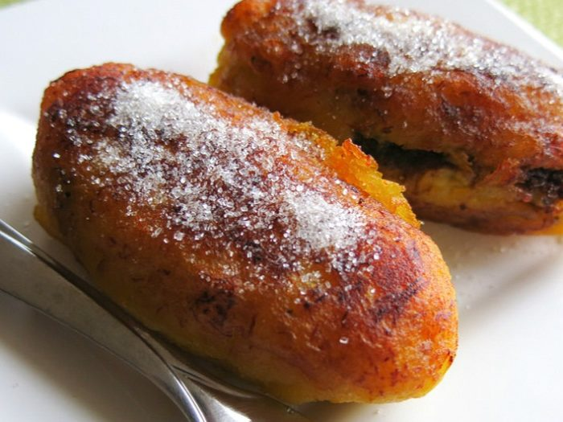
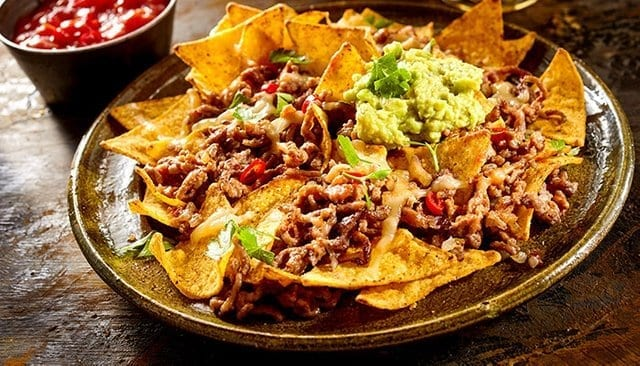
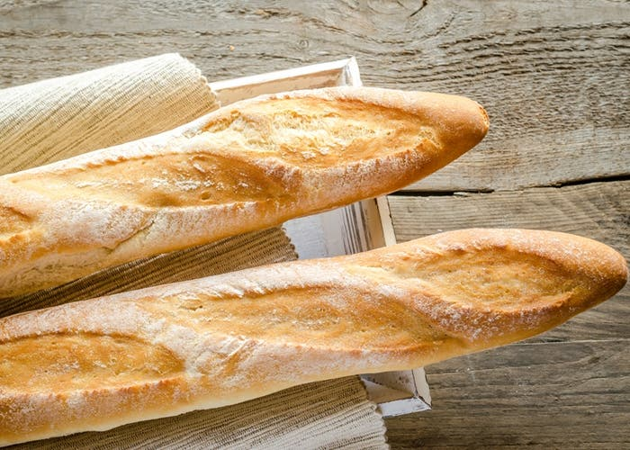
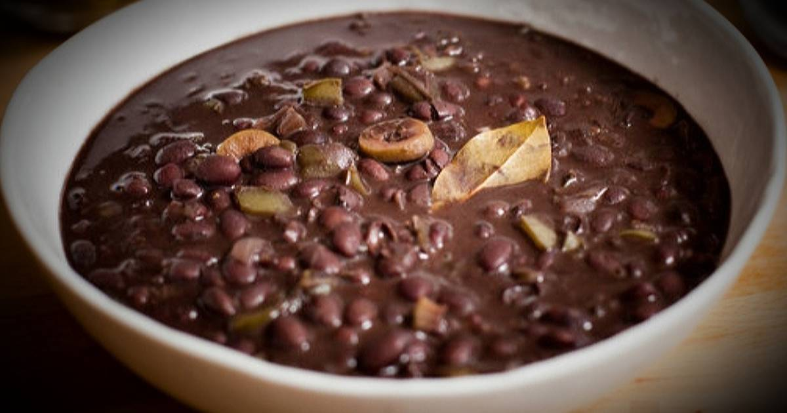

 Los rellenitos de plátano son un exquisito postre guatemalteco que se prepara a base de plátano macho maduro. De hecho, el relleno puede ser de frijol o manjar. El plátano macho es más grande que el plátano común. Es por esto que para consumirlo, debe ser cocido, ya que crudo poco digestible. Además, su sabor no es dulce ya que apenas contiene azúcares. Primero, cortar el plátano en trozos y cocinar en el agua, con canela en raja y azúcar. Luego retirar la cáscara, hacerlos puré y agregar la miga de pan. Freír el frijol previamente cocinado y licuado espeso con el azúcar, la canela en polvo y el chocolate. Darle al plátano forma de tortita, rellenar con una cucharada de frijol y cerrar en forma de rellenito. Pasar por harina y freír en aceite. Espolvorear con azúcar. Si se desea se puede sustituir el frijol por manjar.
 La carne molida es uno de esos ingredientes que siempre me saca de apuros. La uso en muchas de mis recetas, para rellenar empanadas o en picadillos, y en unos guisos que se preparan en Costa Rica con diferentes verduras. El otro día usé carne molida en unos nachos y a mis hijos les encantó. Le añadí frijoles negros, tomate y queso para darles un toque más consistente y que se convirtiera en una comida completa, no solamente un aperitivo. El secreto de mis nachos es condimentar muy bien la carne y dejarla bien cocinada, pero jugosa. De esta manera, cuando se meten al horno para derretir los quesos la carne no se seca, y el platillo queda suave, pero crujiente. Además, estos nachos son una excelente opción para utilizar sobrantes de otras comidas, porque realmente se le puede agregar muchas otras cosas más, como granos de maíz, arroz, aceitunas, ejotes, pimientos morrones y chiles picantes, si los quieres hacer picosos. Si quieres hacerlos más saludables usa carne molida de pollo o de pavo ¡son deliciosos! También usa los totopos que venden horneados, para que no queden muy grasosos. Cerca de casa tengo un restaurante donde compro los totopos o chips de tortilla. Además de que es más económico que los que venden en el supermercado, los hacen frescos todos los días y como son horneados, no tienen nada de grasa. Te sugiero que compres los totopos en tu restaurante preferido. Anímate y prepara mi receta de nachos con carne en tu próxima reunión. ¡Te van a gustar
 Introducimos el agua templada en un recipiente amplio y hondo y añadimos la levadura fresca, desmenuzada, y el azúcar. Removemos hasta que el azúcar y la levadura se integren por completo. Añadimos la mitad de la harina y todo el aceite. Removemos bien, procurando aplastar los grumos que se formen, y dejamos reposar durante 20 minutos a temperatura ambiente, cubriendo el recipiente con un trapo limpio. La masa crecerá ligeramente y se llenará de burbujas. Transcurrido el tiempo de reposo incorporamos el resto de la harina, la sal y removemos hasta que no podamos más, porque se volverá muy espesa. Espolvoreamos la superficie de trabajo con harina y volcamos la masa sobre ella. Nos engrasamos las manos con aceite y amasamos durante un par de minutos. Formamos una bola con la masa y la colocamos sobre una bandeja de horno cubierta con papel vegetal untado con un poco de aceite. Hacemos dos cortes en la superficie con un cuchillo afilado y, si queremos dar un aire rústico al pan, lo espolvoreamos con harina. Embadurnamos con aceite el interior de un recipiente amplio y hondo apto para horno (hemos usado un bol de pyrex de 24 cm, pero se puede usar una cacerola o similar) y cubrimos con él la masa. Cocemos en el horno, precalentado a 200 ºC con calor arriba y abajo, durante 45 minutos. Destapamos y dejamos enfriar sobre una rejilla antes de consumir.
 Primero, colocar los frijoles en un tazón y remover cualquier impureza, como piedras o tierra. Luego, lavar bien los frijoles. Dejarlos remojar por 1 hora o durante la noche en suficiente agua. Entonces, colar los frijoles y colocarlos en la olla de cocimiento lento. Agregar la cebolla, ajo y sal. También incluir las 8 tazas de agua y procurar que queden por lo menos 5 centímetros de agua sobre los frijoles. Hervir con temperatura alta por aproximadamente 4 horas. Probar los frijoles para saber si tienen la consistencia que se desea. Se pueden agregar unos 30 minutos más de cocimiento si lo necesitan. Servir con un poco de queso blanco o crema. Normalmente, se suele acompañar con rico arroz blanco, tortillas y aguacate. Esto le dará un toque muy especial.